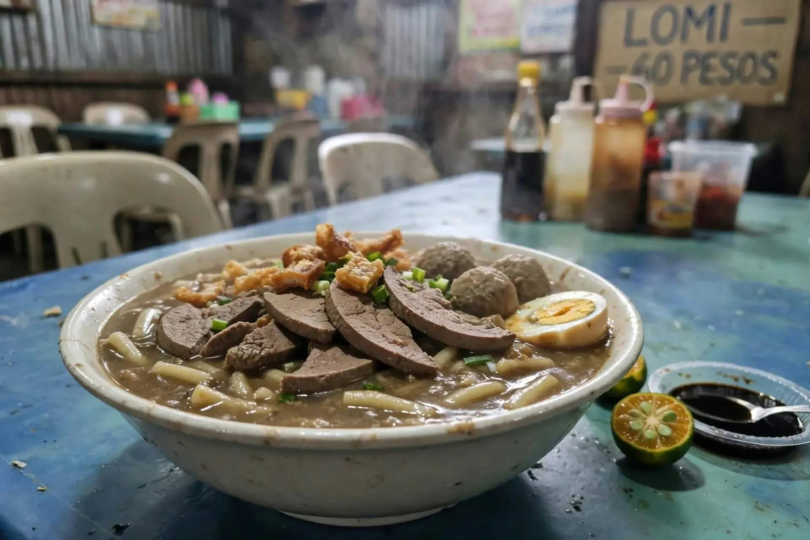
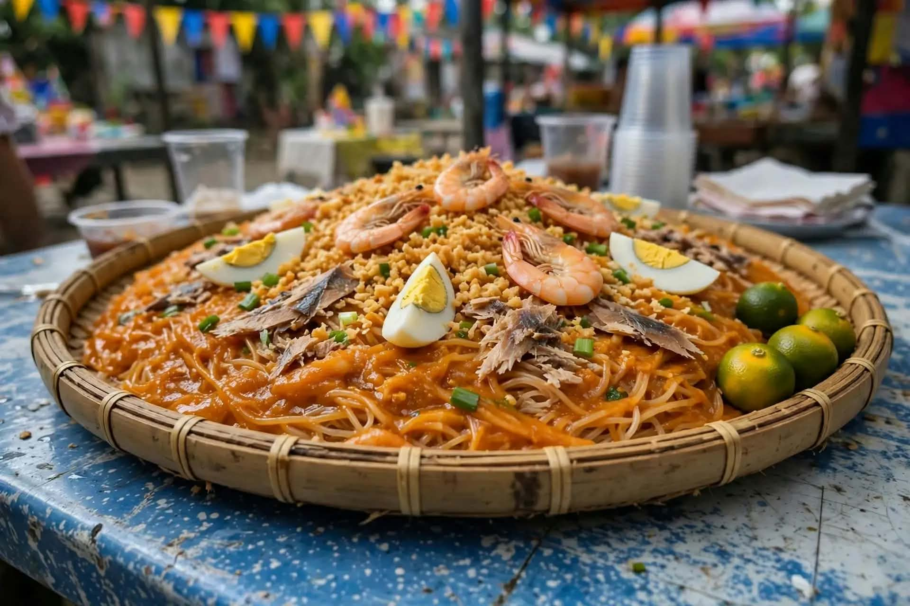
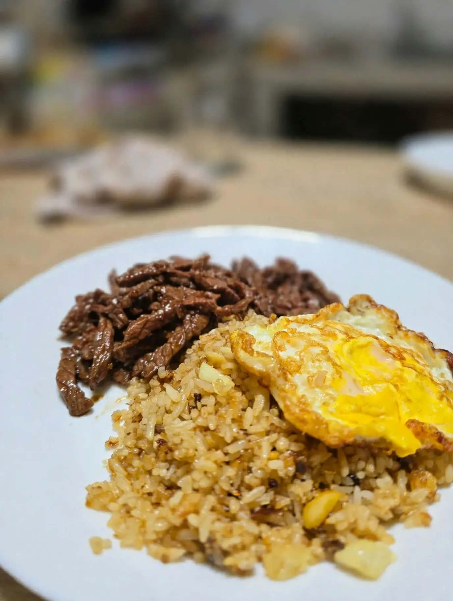
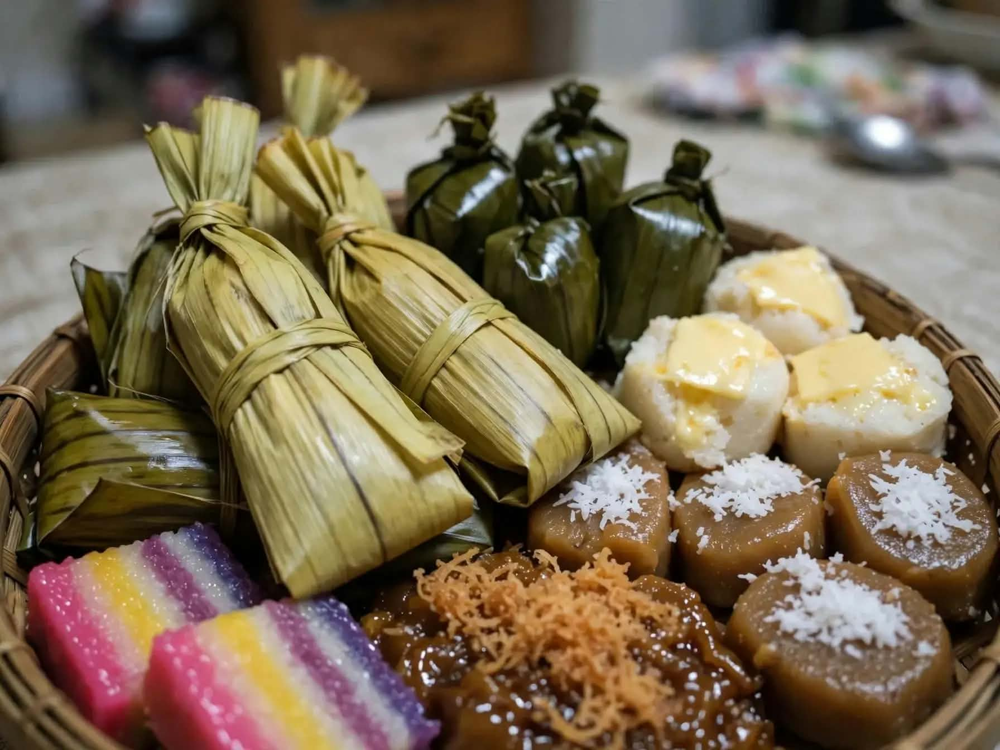
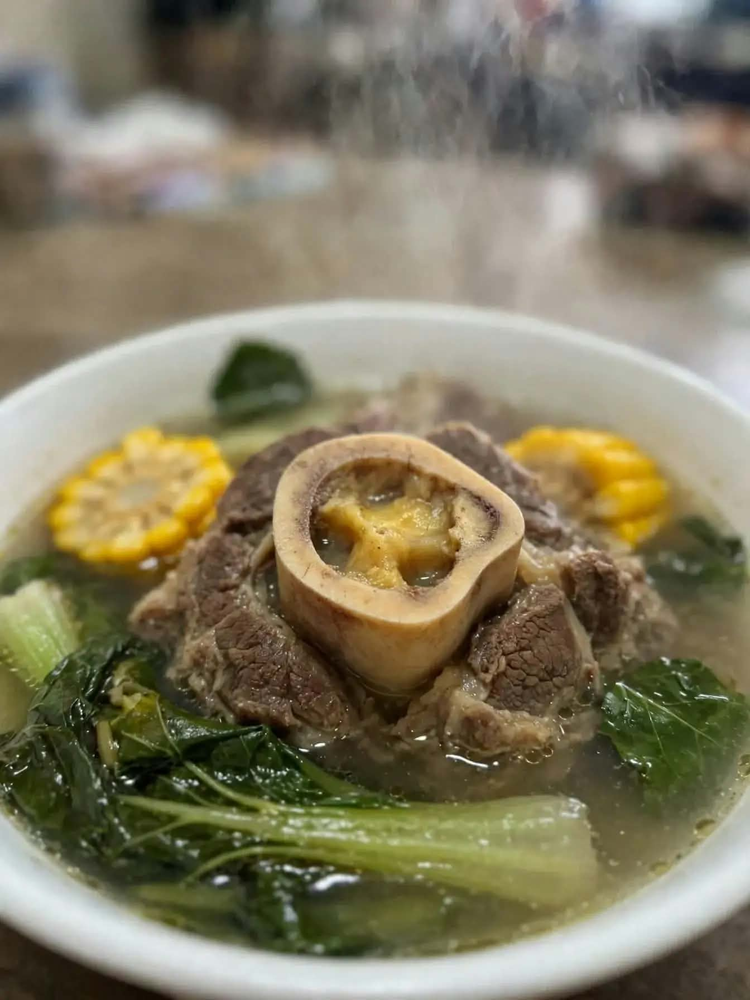

Discover the Traditional Delicacies of Nasugbu!
Our website is about Traditional Delicacies (Food) in Nasugbu, Batangas.
Nasugbu is famous for its delicious foods. From hot Lomi to savory Bulalo, every dish tells the story of our hometown.
9-EDELWEISS - GROUP 2
Delicious, hot, and loved by Batanguenos! It has thick soup, fresh noodles, tender meat, and a rich egg.

HOME — Precious Aliena Oriondo
ABOUT — Khayley Bausas
GALLERY — Yossef Umandal
CONTACT — Marc Efren Villaflor
This website is our Final Project for Our Hometown Showcase.
Our group is 9-EDELWEISS — GROUP 2.
Our chosen topic is Traditional Delicacies (Food) in Nasugbu.
We chose Foods because Nasugbu has some of the most delicious and famous dishes in the province of Batangas.
Our goal is to show that the food in Nasugbu is not only delicious, but also a cherished part of our culture and tradition. In every dish, there is a story. In every home-cooked meal, there is love.
Lomi Batangas, Sinigang na Baboy, Palabok, Bulalo, Native Kakanin, and Tapang Taal.
These are the most loved and iconic flavors you will find in Nasugbu and across Batangas!
Thick hot soup with fresh noodles, meat, and egg — a Batangas classic!
Warm, sour, and savory soup — a comfort food favorite nationwide.

PalabokRice noodles with rich orange sauce, shrimp, chicharon, and egg.

Tapang TaalCured beef, garlic rice, and fried egg — the best breakfast combo!

Native KakaninSweet rice cakes like Puto, Suman, and Bibingka — perfect desserts!

BulaloRich beef shank soup with corn and vegetables — Nasugbu's pride!
We hope you enjoyed exploring the delicious flavors of Nasugbu, Batangas!
If you have questions or want to learn more about our hometown's delicacies, feel free to reach out.
School Year: 2025–2026
Section: 9-Edelweiss — Group 2
Location: Nasugbu, Batangas, Philippines
Thank you for visiting our showcase! 🧡